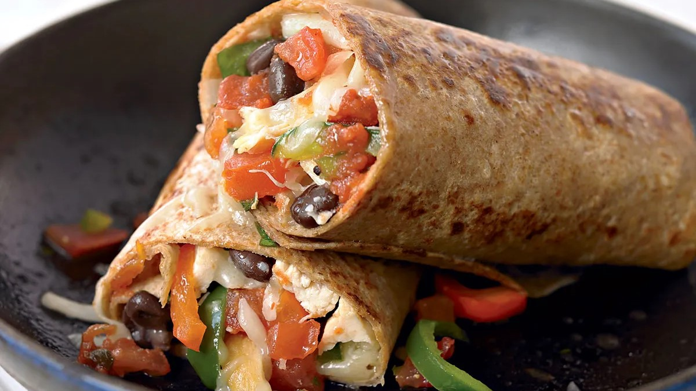

Omelette

Ingredients
- 1 tsp olive oil
- ¼ red, orange, or yellow pepper, chopped
- 2 free-range eggs
- Fresh parsley (small pinch)
- 4 cherry tomatoes, halved
- Large handful of spinach, torn
- Fresh chives, roughly chopped
- Freshly ground black pepper
Steps
- Brush or spray a non-stick frying pan with the oil and cook the pepper for 3-4 minutes until softened.
- Meanwhile, beat the eggs, adding pepper and parsley.
- Pour the eggs into the pan, add the cherry tomatoes, and cook until firm but still soft on top.
- Add spinach and chives, fold the omelette, and cook until golden brown.
Vegan strawberry pancakes

Ingredients
- 115g wholemeal spelt flour
- 1 tsp baking powder
- 1 tsp cinnamon
- 150ml soya milk
- 240g soya yogurt
- 1 tsp vanilla extract
- drop of rapeseed oil
- 200g strawberries
Steps
- Mix the flour with the baking powder and cinnamon in a bowl using a balloon whisk. In a jug, whisk together the soya milk, 2 tbsp of the yogurt and vanilla extract, then whisk this into the dry ingredients to make a thick batter.
- Cook over a low heat for 1-2 mins until set, and bubbles appear on the surface, then turn the pancakes using a palette knife. Cook for another 1-2 mins until golden and cooked through.
- Serve three pancakes per person topped with the remaining yogurt, berries, pecans and mint leaves.
Healthy Burrito

Ingredients
- 1 tsp chipotle paste
- 1 egg
- 1 tsp rapeseed oil
- 50g kale
- 7 cherry tomatoes
- ½ small avocado
- 1 wholemeal tortilla wrap
Steps
- Whisk the chipotle paste with the egg and some seasoning in a jug. Heat the oil in a large frying pan, add the kale and tomatoes.
- Cook until the kale is wilted and the tomatoes have softened, then push everything to the side of the pan. Pour the beaten egg into the cleared half of the pan and scramble. Layer everything into the centre of your wrap, topping with the avocado, then wrap up and eat immediately.
Scrambled Eggs

Ingredients
- 4 eggs
- 2-3 tbsp low fat milk
- Salt and pepper to taste
- TO SERVE:
- 2 slices multigrain bread, toasted
Steps
- Place medium sized non-stick frying pan over low heat.
- Crack eggs into a medium sized bowl and add milk, pepper and a small pinch of salt. Whisk together with a fork. Pour eggs into pan and stir slowly while cooking.
- Because of the low heat, eggs will take a while to start cooking, but once they start, they cook quite quickly. Keep stirring so that eggs cook evenly.
- Remove from heat once cooked to your liking and serve on prepared toast.